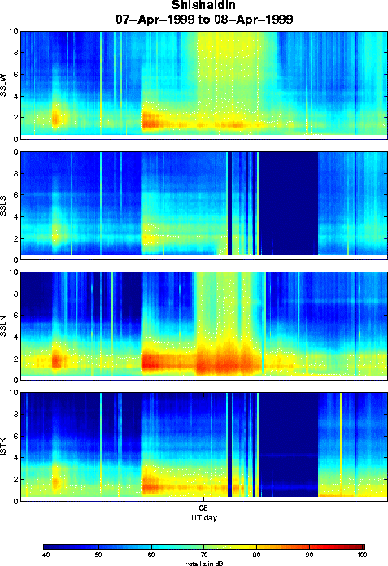
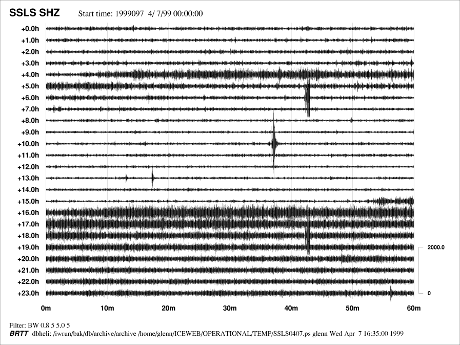

Spectrogram for the period April 7th-8th, 1999, at Shishaldin.
.
Pseudo-helicorder plot for Shishaldin station SSLS on 7th April, 1999 (UT time). A short burst of tremor begins shortly after 0400 UT, lasting for approximately 2 hours. A much more intense burst begins at 1552 UT and is still quite strong at the end of the UT day.
.
Glenn Thompson, 5 May 1999.